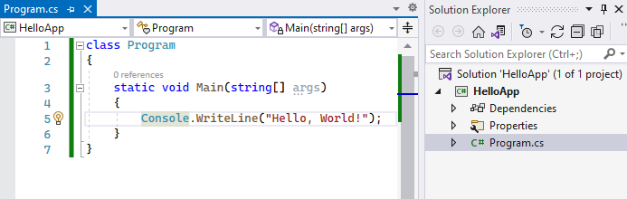

| Тема Класс Program и метод Main. | ||
| Назад | ||
|
Точкой входа в программу на языке C# является метод Main. Именно с этого метода начинается выполнение программы на C#. И программа на C# должна обязательно иметь метод Main. Однако может возникнуть вопрос, какой еще метод Main, если, например, Visual Studio 2022 по умолчанию создает проект консольного приложения со следующим кодом: // See https://aka.ms/new-console-template for more information Console.WriteLine("Hello, World!"); И эта программа никаких методов Main не содержит, но при этом нормально выполняется и выводит на консоль строку "Hello, World!", как и запланировано. Это так называемая программа верхнего уровня (top-level program). А вызов Console.WriteLine("Hello, World!") представляет инструкцию верхнего уровня (top-level statement) Однако в реальности этот код неявно помещается компилятором в метод Main, который, в свою очередь, помещается в класс Program. В действительности название класса может быть любым (как правило, это класс Program, собственно поэтому генерируемый по умолчанию файл кода называется Program.cs). Но метод Main является обязательной частью консольного приложения. Поэтому выше представленный код фактически эквивалентен следующей программе: class Program { static void Main(string[] args) { // See https://aka.ms/new-console-template for more information Console.WriteLine("Hello, World!"); } } Определение метода Main обязательно начинается с модификатора static, которое указывает, что метод Main - статический. Позже мы подробнее разберем, что все это значит. Возвращаемым типом метода Main обязательно является тип void. Кроме того, в качестве параметра он принимает массив строк - string[] args - в реальной программе это те параметры, через которые при запуске программы из консоли мы можем передать ей некоторые значения. Внутри метода располагаются действия, которые выполняет программа. До Visual Studio 2022 все предыдущие студии создавали по умолчанию примерно такой код. Но начиная с Visual Studio 2022 нам необязательно вручную определять класс Program и в нем метод Main - компилятор генерирует их самостоятельно. Если мы определяем какие-то переменные, константы, методы и обращаемся к ним, они помещаются в метод Main. Например, следующая программа верхнего уровня string hello = "Hello METANIT.COM"; Print(hello); void Print(string message) { Console.WriteLine(message); } будет аналогична следующей программе: class Program { static void Main(string[] args) { string hello = "Hello METANIT.COM"; Print(hello); void Print(string message) { Console.WriteLine(message); } } } Если определяются новые типы, например, классы, то они помещаются вне класса Program. Например, код: Person tom = new(); tom.SayHello(); class Person { public void SayHello() =>Console.WriteLine("Hello"); } будет аналогичен следующему class Program { static void Main(string[] args) { Person tom = new(); tom.SayHello(); } } class Person { public void SayHello() => Console.WriteLine("Hello"); } Однако надо учитывать, что опредления типов (в частности классов) должны идти в конце файла после инструкций верхнего уровня. То есть:
// инструкции верхнего уровня (top-level statements) Person tom = new(); tom.SayHello(); // определение класса идет после инструкций верхнего уровня class Person { public void SayHello() => Console.WriteLine("Hello"); } Таким образом, мы можем продолжать писать программы верхнего уровня без явного определения метода Main. Либо мы можем явным образом определить метод Main и класс Program: top-level programs in C# и Visual Studio 2022 И этот код будет выполняться аналогичным образом, как если бы мы не использовали класс Program и метод Main.
 |
||
| Конспект подготовлен Бакулиным А. М. 2022 год. | ||